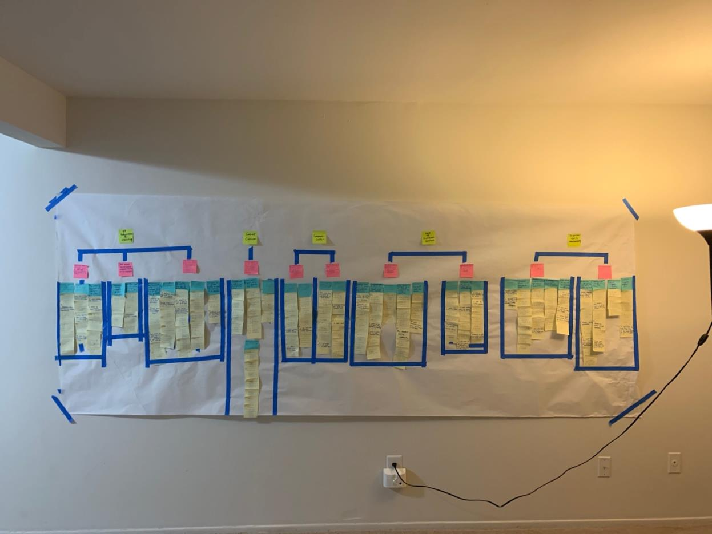

Contextual Inquiry for the Michigan Theater.
Performed UX research on behalf of the Michigan Theater, which requested a group from the School of Information to help improve their business.
The Project
As part of my Contextual Inquiry class I was assigned to a group given the task to assist the Michigan Theater to improve their internal communication.
The Michigan Theater requested a group from the University of Michigan School of Information to help diagnose their internal issues and help remedy the problem. My group communicated with the Theater and was able to interview key employees that revealed that the Theater was facing some internal communication and organization issues (more details available upon request). Our team gathered data and analyzed it using an affinity wall to generate our recommendation as objectively as possible. Our findings and recommendation were then delivered to the Theater in our collaborative report (report available upon request).
Deliverables
- Background Research Report
- Affinity Wall
- Findings Presentation
- Recommendation & Final Report